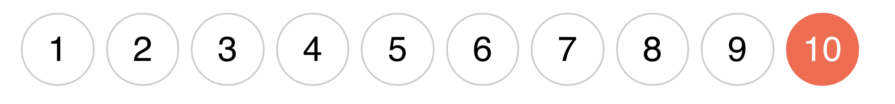
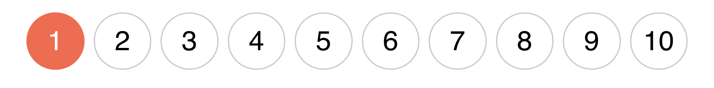
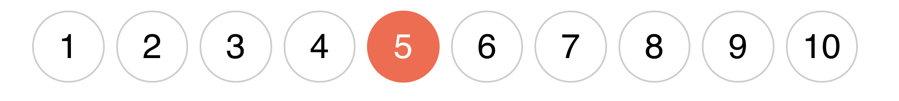

Структурные псевдоклассы
Структурные псевдоклассы это способ выбрать определённые элементы из
коллекции дочерних элементов (соседей), без присваивания дополнительных
классов. Дочерние элементы (соседи) - это элементы с общим родителем.
В примере выше элементы li.list-item это соседи, и к ним можно будет
применить структурные псевдоклассы. В тоже время ссылки a.list-link не
являются соседями, у них нет общего родителя, поэтому нельзя будет
использовать псевдоклассы для выбора какой-то определённой ссылки или
группы ссылок.
# ✅ Сработает, .list-item это коллекция соседей с общим родителем
.list-item:структурный-псевдокласс {}
# ❌ Не сработает, .list-link это не коллекция соседей, у них нет общего
родителя .list-link:структурный-псевдокласс {}
Псевдоклассы :first-child и :last-child
Позволяют выбрать первый или последний элемент в коллекции соседей.
Например, если каждому элементу списка задать нижний отступ, то он будет и
у последнего. Крайнюю геометрию необходимо обязательно чистить, потому что
такие оступы могут неочевидно выпадать или расширять родителя.
- HTML
- CSS
- JavaScript
- React
Псевдокласс :last-child выбирает последний элемент в коллекции соседей.

.list-item {
margin-bottom: 12px;
}
.list-item:last-child {
margin-bottom: 0;
}
Аналогично работает :first-child, применяя стили к первому элементу в
коллекции соседей. Например, когда нужно задать верхний отступ всем
элементам кроме первого.

.list-item {
margin-top: 12px;
}
.list-item:first-child {
margin-top: 0;
}
Псевдокласс :not(selector)
Позволяет выбрать все элементы, которые не подходят под критерий -
простой селектор записанный в скобках. Простой селектор это
универсальный селектор, селектор типа, идентификатора, атрибута, класса
или псевдокласса. Правило применения нижнего отступа ко всем элементам
кроме последнего можно записать так.
Читается как: применить стили ко всем элементам с классом list-item,
которые не являются последним элементом в коллекции соседей.
.list-item:not(:last-child) {
margin-bottom: 12px;
}
Псевдокласс :nth-child(an+b)
Позволяет выбрать все элементы, которые не подходят под критерий -
простой селектор записанный в скобках. Простой селектор это
универсальный селектор, селектор типа, идентификатора, атрибута, класса
или псевдокласса. Правило применения нижнего отступа ко всем элементам
кроме последнего можно записать так.
Читается как: применить стили ко всем элементам с классом list-item,
которые не являются последним элементом в коллекции соседей.
.list-item:not(:last-child) {
margin-bottom: 12px;
}
Псевдокласс :nth-child(an+b)
Выбирает элементы в коллекции соседей по номеру указанному в скобках,
при помощи цикла an+b, который позволяет задать правило для
последовательности элементов.
a - период цикла. Произвольное число.
n - счётчик цикла. Начинается с нуля и увеличивается на единицу на
каждой итерации.
b - смещение. Произвольное число.
Например, если a = 2, а b = 1, то an+b = 2n+1. Эта формула выберет все
нечётные элементы.
# При n = 0
2 * 0 + 1 = 1
# При n = 1
2 * 1 + 1 = 3
# При n = 2
2 * 2 + 1 = 5
# И так далее для n = 3, n = 4 ...
Создадим разметку списка из десяти элементов и будем изменять цвет их
фона.
N-й элемент
В самом простом случае можно передать буквально номер элемента
коллекции. То есть a = 0, а значение b это произвольное число - номер
элемента коллекции. Тогда при любом n, формула будет 0 * n + b, или
просто b.

.list-item:nth-child(5) {
background-color: orange;
}
Чётные и нечётные элементы
Для выбора всех чётных элементов можно использовать формулу 2n или её
псевдоним - значение even, зарезервированное слово.

.list-item:nth-child(2n) {
background-color: orange;
}
Аналогично используя псевдоним
.list-item:nth-child(even) {
background-color: orange;
}
Для выбора нечётных элементов можно использовать формулу 2n + 1 или её
псевдоним - значение odd, зарезервированное слово.

.list-item:nth-child(2n + 1) {
background-color: orange;
}
Аналогично используя псевдоним
.list-item:nth-child(odd) {
background-color: orange;
}
От N-го элемента
Если задать a = 1, то результирующая формула n + b позволяет выбрать все
элементы начиная с элемента под номером b. Например, для того, чтобы
выбрать все элементы с шестого и дальше (то есть кроме первых пяти),
используем формулу n + 6.

.list-item:nth-child(n + 6) {
background-color: orange;
}
До N-го элемента
Если задать a = -1, то результирующая формула -n + b позволяет выбрать
все элементы начиная с первого и до элемента под номером b. Например,
для того чтобы выбрать первые пять элементов используем формулу -n + 5.
.list-item:nth-child(-n + 5) {
background-color: orange;
}
Каждый N-й элемент
Например, для того, чтобы выбрать каждый 3-й элемент начиная с первого,
используем цикл an+b, в котором a = 3, а смещение b = 1.

.list-item:nth-child(3n + 1) {
background-color: orange;
}
Несколько примеров для закрепления.
3n + 2 - каждый третий элемент начиная со 2-го, то есть элементы 2, 5, 8 и
т. д.
2n + 4 - каждый второй элемент начиная с 4-го, то есть элементы 4, 6, 8 и
т. д.
4n + 5 - каждый четвёртый элемент начиная с 5-го, то есть элементы 5, 9,
13 и т. д.
Псевдокласс :nth-last-child(an+b)
Аналог :nth-child() c отличием в том, что отсчёт ведётся с конца коллекции
(последнего элемента).
N-й элемент
Выберем 3-й элемент с конца, то есть 8-й, потому что всего 10-ть
элементов. Если бы всего было 20-ть элементов, тогда был бы выбран 18-й и
т. д.

.list-item:nth-last-child(3) {
background-color: orange;
}
До N-го элемента
Чтобы выбрать несколько последних элементов в коллекции, используется
формула -n + b, где b это количество выбираемых элементов. Например, при b
= 3 будут выбраны только последние три элемента.

.list-item:nth-last-child(-n + 3) {
background-color: orange;
}
Дополнительные псевдоклассы
:first-of-type - выбирает первый селектор данного типа.
:last-of-type - выбирает последний селектор данного типа.
:only-of-type - выбирает элемент, который является единственным ребёнком
такого типа в коллекции соседей.
:nth-of-type(an+b) - выбирает заданный в скобках номер селектора используя
формулу an+b.
:nth-last-of-type(an+b) - аналог
:nth-of-type() с отличием в том, что отсчёт ведётся с конца колекции
(последнего элемента).
:only-child - выбирает элемент, который является единственным ребёнком с
таким селектором в коллекции соседей.
:empty - выбирает пустые элементы, то есть без потомков и текста.